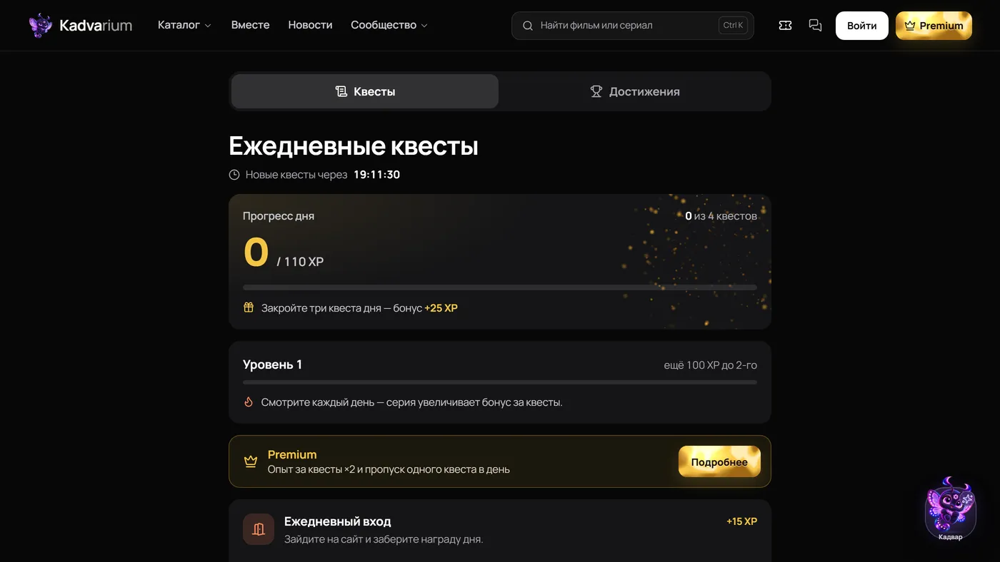

Kadvarium: кино, которое смотрят вместе
Афиша фильмов и сериалов с личной коллекцией, кинодневником и профилями сообщества. За последний месяц у сайта появились приложение для Android, голос в залах совместного просмотра и ежедневные квесты.
- Залы совместного просмотра: плеер синхронизируется у всех участников, голосовой чат на WebRTC с шумоподавлением RNNoise
- Android-приложение на Expo и React Native: больше 20 экранов, вход через Google и Telegram, голос не обрывается, когда приложение свёрнуто
- Квесты, достижения, уровни и лидеры недели
- ИИ-помощник Кадвар отвечает по каталогу, новостям и Википедии и показывает источники с датой проверки
- Premium на 30, 90 и 365 дней с оплатой через ЮKassa; данные карты сайт не хранит
- 172 автотеста и сценарии в двух браузерах для комнат и голоса
Next.js 16, React 19, Tailwind CSS 4, SQLite, three.js, WebRTC, Expo 58, React Native 0.88, Claude / OpenAI / Ollama